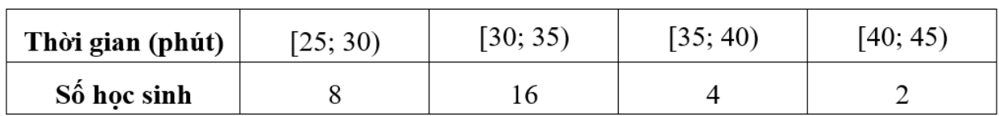
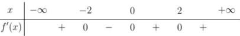
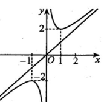
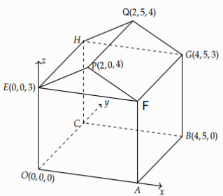
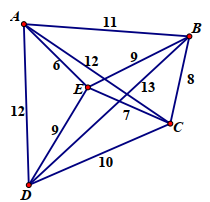
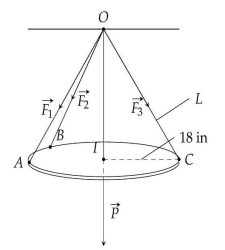
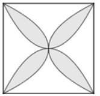

Nguyên hàm của hàm \( f(x) \) là hàm \( F(x) \) sao cho \( F'(x) = f(x) \). Nguyên hàm của \( \cos x \) là \( \sin x + C \).
Nguyên hàm của hàm số \( f(x) = \cos x \) là
Chọn đáp án:
Lời giải:
Ta có \( \int \cos x \, dx = \sin x + C \).
Đáp án: A.
Cho hàm \( f(x) \) liên tục trên \([a; b]\), ta có \( \int_a^b k f(x) \, dx = k \int_a^b f(x) \, dx \), với \( k \) là hằng số.
Cho hàm số \( f(x) \) liên tục trên đoạn \([a; b]\) và \( \int_a^b f(x) \, dx = 2025 \). Khi đó giá trị \( \int_a^b 2 f(x) \, dx \) bằng
Chọn đáp án:
Lời giải:
Ta có \( \int_a^b 2 f(x) \, dx = 2 \int_a^b f(x) \, dx = 2 \cdot 2025 = 4050 \).
Đáp án: A.
Khoảng biến thiên của mẫu số liệu ghép nhóm là hiệu giữa giá trị lớn nhất và nhỏ nhất của các khoảng dữ liệu.
Thời gian hoàn thành bài kiểm tra môn Toán của các bạn trong lớp 12A10 được cho trong bảng sau:

Khoảng biến thiên cho mẫu số liệu ghép nhóm trên là
Chọn đáp án:
Lời giải:
Khoảng biến thiên cho mẫu số liệu ghép nhóm trên là \( 45 - 25 = 20 \).
Đáp án: C.
Vector pháp tuyến của mặt phẳng \( ax + by + cz + d = 0 \) là \( \vec{n} = (a; b; c) \).
Trong không gian với hệ trục tọa độ \( Oxyz \), cho mặt phẳng \( (P) \) có phương trình \( x - 2y - 3z + 5 = 0 \). Vector nào sau đây là một vector pháp tuyến của mặt phẳng \( (P) \)?
Chọn đáp án:
Lời giải:
Vector pháp tuyến của mặt phẳng \( x - 2y - 3z + 5 = 0 \) là \( \vec{n} = (1; -2; -3) \).
Đáp án: B.
Điểm cực trị của hàm số \( f(x) \) xảy ra tại \( x_0 \) nếu \( f'(x_0) = 0 \) và \( f'(x) \) đổi dấu qua \( x_0 \).
Cho hàm số \( f(x) \) có bảng xét dấu của \( f'(x) \) như sau:

Hàm số \( f(x) \) có bao nhiêu điểm cực trị?
Chọn đáp án:
Lời giải:
Dựa vào bảng xét dấu của \( f'(x) \), do \( f'(x) \) đổi dấu 2 lần tại các điểm \( x = -2 \), \( x = 0 \), nên hàm số đã cho có 2 điểm cực trị.
Đáp án: C.
Cho bất phương trình \( a^{f(x)} < a^{g(x)} \) với \( a > 1 \), ta có \( f(x) < g(x) \).
Tập nghiệm của bất phương trình \( 2^{2x} < 2^{x+6} \) là
Chọn đáp án:
Lời giải:
Ta có \( 2^{2x} < 2^{x+6} \Leftrightarrow 2x < x + 6 \Leftrightarrow x < 6 \).
Vậy tập nghiệm của bất phương trình là \( (-\infty; 6) \).
Đáp án: B.
Phương trình đường thẳng qua điểm \( M(x_0; y_0; z_0) \) và có vector chỉ phương \( \vec{u} = (a; b; c) \) là \( \frac{x - x_0}{a} = \frac{y - y_0}{b} = \frac{z - z_0}{c} \).
Trong không gian với hệ trục tọa độ \( Oxyz \), phương trình của đường thẳng đi qua điểm \( M(-1; -3; 5) \) và có một vector chỉ phương \( \vec{u} = (2; -1; 1) \) là
Chọn đáp án:
Lời giải:
Phương trình đường thẳng đi qua điểm \( M(-1; -3; 5) \) và có vector chỉ phương \( (2; -1; 1) \) là \( \frac{x + 1}{2} = \frac{y + 3}{-1} = \frac{z - 5}{1} \).
Đáp án: D.
Công thức tổng quát của cấp số nhân: \( u_n = u_1 \cdot q^{n-1} \), với \( q \) là công bội.
Cấp số nhân \( (u_n) \) có \( u_1 = 1 \) và \( u_2 = 3 \). Số hạng \( u_5 \) của cấp số nhân là
Chọn đáp án:
Lời giải:
Công thức tổng quát của cấp số nhân là \( u_n = u_1 \cdot q^{n-1} \). Từ \( u_1 = 1 \), \( u_2 = 3 \), ta có \( q = \frac{u_2}{u_1} = \frac{3}{1} = 3 \). Do đó, \( u_5 = u_1 \cdot q^4 = 1 \cdot 3^4 = 81 \).
Đáp án: A.
Phương trình \( \log_a b = c \) có nghiệm \( b = a^c \), với điều kiện \( b > 0 \).
Nghiệm của phương trình \( \log_3 (x - 1) = 2 \) là
Chọn đáp án:
Lời giải:
Ta có \( \log_3 (x - 1) = 2 \Leftrightarrow x - 1 = 3^2 \Leftrightarrow x = 10 \).
Đáp án: D.
Trong hình chóp, nếu \( SA \perp (ABC) \), thì \( SA \) vuông góc với mọi đường thẳng nằm trong mặt phẳng \( (ABC) \).
Cho hình chóp \( S.ABCD \) có đáy \( ABCD \) là hình chữ nhật và \( SA \perp (ABCD) \). Đường thẳng nào sau đây vuông góc với \( AC \)?
Chọn đáp án:
Lời giải:
Ta có \( SA \perp (ABCD) \Rightarrow SA \perp AC \).
Đáp án: A.
Trong hình lập phương, các vector cạnh có độ dài bằng nhau, nhưng hướng có thể đối nhau, dẫn đến các đẳng thức vector có thể sai.
Cho hình lập phương \( ABCD.A'B'C'D' \). Đẳng thức nào sau đây sai?
Chọn đáp án:
Lời giải:
Đẳng thức sai là \( \overrightarrow{AB} = \overrightarrow{CD} \), vì \( \overrightarrow{AB} \) và \( \overrightarrow{CD} \) là hai vector đối nhau.
Đáp án: D.
Hàm số đồng biến trên khoảng \( (a; b) \) nếu \( f'(x) \geq 0 \) trên khoảng đó. Đồ thị hàm số giúp xác định các khoảng đồng biến.
Cho hàm số \( y = \frac{ax^2 + bx + c}{ex + f} \) có đồ thị như sau:

Hàm số đã cho đồng biến trên khoảng nào dưới đây?
Chọn đáp án:
Lời giải:
Dựa vào đồ thị, ta có hàm số đồng biến trên khoảng \( (1; 2) \).
Đáp án: C.
Đạo hàm của hàm số \( f(x) \) cho biết chiều biến thiên. Giá trị cực tiểu được tìm bằng cách xét đạo hàm và các điểm biên.
Cho hàm số \( f(x) = x - 2 \sin x \). Xét các phát biểu sau:
Chọn đáp án cho từng phát biểu:
a)
b)
c)
d)
Lời giải:
a) Sai. \( f\left(\frac{\pi}{2}\right) = \frac{\pi}{2} - 2 \sin \frac{\pi}{2} = \frac{\pi}{2} - 2 \).
b) Đúng. \( f'(x) = 1 - 2 \cos x \).
c) Đúng. \( f'(x) = 0 \Leftrightarrow 1 - 2 \cos x = 0 \Leftrightarrow \cos x = \frac{1}{2} \Leftrightarrow x = \frac{\pi}{3} \) (trên \( \left[0; \frac{\pi}{2}\right] \)).
d) Sai. \( f(0) = 0 \), \( f\left(\frac{\pi}{2}\right) = \frac{\pi}{2} - 2 \), \( f\left(\frac{\pi}{3}\right) = \frac{\pi}{3} - \sqrt{3} \). Giá trị nhỏ nhất là \( \frac{\pi}{3} - \sqrt{3} \).
Đáp án: a) Sai, b) Đúng, c) Đúng, d) Sai.
Vận tốc \( v(t) \) cho quãng đường bằng \( s = \int v(t) \, dt \). Khi \( v(t) = 0 \), vật dừng lại.
Một ô tô đang chạy với vận tốc \( 20 \, \text{m/s} \) thì người lái đạp phanh. Sau khi đạp phanh, ô tô chuyển động chậm dần đều với vận tốc \( v(t) = -40t + 20 \, (\text{m/s}) \), trong đó \( t \) là thời gian tính bằng giây kể từ lúc đạp phanh. Xét các phát biểu sau:
Chọn đáp án cho từng phát biểu:
a)
b)
c)
d)
Lời giải:
a) Đúng. \( \int (-40t + 20) \, dt = -20t^2 + 20t + C \).
b) Đúng. Khi xe dừng hẳn thì vận tốc \( v(t) = 0 \, \text{m/s} \).
c) Sai. Khi ô tô dừng hẳn, \( v(t) = 0 \Rightarrow -40t + 20 = 0 \Rightarrow t = \frac{1}{2} \, \text{giây} \).
d) Sai. Quãng đường ô tô đi chuyển từ lúc đạp phanh đến khi dừng hẳn là \( \int_0^{1/2} (-40t + 20) \, dt = 5 \, \text{m} \).
Đáp án: a) Đúng, b) Đúng, c) Sai, d) Sai.
Xác suất có điều kiện: \( P(A|B) = \frac{P(A \cap B)}{P(B)} \). Xác suất đồng thời: \( P(A \cap B) = P(A) \cdot P(B|A) \).
Khi kiểm tra chất lượng dạy học ở một nhà trường, ta có:
- Có \( 40\% \) học sinh học giỏi môn Toán.
- Có \( 30\% \) học sinh học giỏi môn Văn.
- Trong số các học sinh học giỏi môn Văn có \( 80\% \) học giỏi môn Toán.
Chọn ngẫu nhiên 1 học sinh. Xét các phát biểu sau:
Chọn đáp án cho từng phát biểu:
a)
b)
c)
d)
Lời giải:
Gọi \( A \): Học sinh học giỏi môn Văn; \( B \): Học sinh học giỏi môn Toán.
Theo đề: \( P(A) = 0,3 \), \( P(B) = 0,4 \), \( P(B|A) = 0,8 \).
a) Đúng. \( P(A) = 0,3 \).
b) Đúng. \( P(B|A) = 0,8 \).
c) Sai. \( P(B|B) = 1 \neq 0,6 \).
d) Đúng. \( P(A \cap B) = P(A) \cdot P(B|A) = 0,3 \cdot 0,8 = 0,24 \). Do đó, \( P(A|B) = \frac{P(A \cap B)}{P(B)} = \frac{0,24}{0,4} = 0,6 \).
Đáp án: a) Đúng, b) Đúng, c) Sai, d) Đúng.
Tích vô hướng: \( \vec{a} \cdot \vec{b} = a_x b_x + a_y b_y + a_z b_z \). Góc giữa hai mặt phẳng được tính qua vector pháp tuyến.
Trong không gian với hệ trục tọa độ \( Oxyz \). Cho mô hình sau:

Xét các phát biểu sau:
Chọn đáp án cho từng phát biểu:
a)
b)
c)
d)
Lời giải:
a) Đúng. Điểm \( A \) nằm trên trục hoành và có hoành độ bằng 4, nên \( A(4; 0; 0) \).
b) Sai. \( A(4; 0; 0) \), \( H(0; 5; 3) \), nên \( \overrightarrow{AH} = (-4; 5; 3) \).
c) Sai. \( \overrightarrow{AH} = (-4; 5; 3) \), \( F(4; 0; 3) \), \( \overrightarrow{AF} = (0; 0; 3) \). Tích \( \overrightarrow{AH} \cdot \overrightarrow{AF} = -4 \cdot 0 + 5 \cdot 0 + 3 \cdot 3 = 9 \).
d) Đúng. Vector pháp tuyến \( \vec{n}_1 = (5; 0; 10) \), \( \vec{n}_2 = (0; 0; 20) \). Cosin góc: \( \cos \alpha = \frac{|\vec{n}_1 \cdot \vec{n}_2|}{|\vec{n}_1| \cdot |\vec{n}_2|} = \frac{10 \cdot 20}{\sqrt{125} \cdot \sqrt{400}} = \frac{2}{\sqrt{5}} \Rightarrow \alpha \approx 26,6^\circ \).
Đáp án: a) Đúng, b) Sai, c) Sai, d) Đúng.
Khoảng cách giữa hai đường thẳng chéo nhau bằng khoảng cách từ một điểm trên đường này đến hình chiếu vuông góc của nó trên đường kia.
Cho hình chóp \( S.ABC \) có \( SA \perp (ABC) \) và \( AB = 3 \), \( BC = 7 \), \( CA = 8 \). Khoảng cách giữa hai đường thẳng \( SA \) và \( BC \) bằng bao nhiêu? (làm tròn kết quả đến hàng phần trăm)
Nhập đáp án:
Lời giải:
Gọi \( H \) là hình chiếu vuông góc của \( A \) trên \( BC \). Khi đó \( AH \perp SA \), \( AH \perp BC \), nên \( d(SA, BC) = AH = \frac{2 S_{\triangle ABC}}{BC} \). Diện tích tam giác \( ABC \): \( s = \frac{\sqrt{(3+7+8)(3+7-8)(3+8-7)(7+8-3)}}{4} = \frac{\sqrt{18 \cdot 2 \cdot 4 \cdot 6}}{4} = \frac{12 \sqrt{3}}{4} = 3 \sqrt{3} \). Do đó, \( AH = \frac{2 \cdot 3 \sqrt{3}}{7} = \frac{6 \sqrt{3}}{7} \approx 2,97 \).
Đáp án: 2,97.
Sử dụng thuật toán láng giềng gần nhất để tìm chu trình có tổng trọng số nhỏ nhất trong bài toán người du hành.
Có năm địa điểm tham quan \( A, B, C, D, E \) với số lượng các chướng ngại vật trên đường đi giữa các cặp địa điểm được mô tả trong hình bên.

Một vị khách du lịch được quyền xuất phát từ một địa điểm nào đó, đi qua tất cả các địa điểm còn lại, mỗi khi đi qua một địa điểm thì không quay lại địa điểm đó nữa, nhưng vị khách đó vẫn phải trở về địa điểm xuất phát ban đầu. Biết rằng vị khách đó chỉ đi trên các đoạn đường thẳng nối hai địa điểm. Tổng số chướng ngại vật của đường đi thỏa mãn điều kiện trên nhận giá trị nhỏ nhất là bao nhiêu?
Nhập đáp án:
Lời giải:
Sử dụng thuật toán láng giềng gần nhất:
Từ \( A \): \( A \to E (6) \to C (7) \to B (8) \to D (13) \to A (12) \), tổng: \( 46 \).
Từ \( B \): \( B \to C (8) \to E (7) \to A (6) \to D (12) \to B (13) \), tổng: \( 46 \).
Từ \( C \): \( C \to E (7) \to A (6) \to B (11) \to D (13) \to C (10) \), tổng: \( 47 \).
Từ \( D \): \( D \to E (9) \to A (6) \to B (11) \to C (8) \to D (10) \), tổng: \( 44 \).
Từ \( E \): \( E \to A (6) \to B (11) \to C (8) \to D (10) \to E (9) \), tổng: \( 44 \).
Tổng số chướng ngại vật nhỏ nhất là \( 44 \) theo các chu trình \( DEABCD \) hoặc \( EABCD \).
Đáp án: 44.
Tìm cực tiểu của hàm số \( F(L) \) bằng cách lấy đạo hàm \( F'(L) = 0 \) và kiểm tra tính đơn điệu.
Một chiếc đèn tròn được treo song song với mặt phẳng nằm ngang bởi ba sợi dây không dãn xuất phát từ điểm \( O \) trên trần nhà lần lượt buộc vào ba điểm \( A, B, C \) trên đèn tròn sao cho tam giác \( ABC \) đều.

Độ dài của ba đoạn dây \( OA, OB, OC \) đều bằng \( L \). Trọng lượng của chiếc đèn là \( 24 \, \text{N} \) và bán kính của chiếc đèn là \( 18 \, \text{in} \) (\( 1 \, \text{inch} = 2,54 \, \text{cm} \)). Gọi \( F \) là độ lớn của các lực căng \( \vec{F}_1, \vec{F}_2, \vec{F}_3 \) trên mỗi sợi dây. Khi đó \( F = F(L) \) là một hàm số với biến số là \( L \). Tìm chiều dài tối thiểu của mỗi sợi dây (tính bằng inch), biết rằng mỗi sợi dây đó được thiết kế để chịu được lực căng tối đa là \( 10 \, \text{N} \).
Nhập đáp án:
Lời giải:
Tam giác \( ABC \) đều, \( OA = OB = OC = L \). Bán kính đèn \( 18 \, \text{in} \), nên \( AG = 18 \), \( AB = 18 \sqrt{3} \). Tọa độ: \( G(0; 0; 0) \), \( A(18; 0; 0) \), \( B(-9; 9 \sqrt{3}; 0) \), \( C(-9; -9 \sqrt{3}; 0) \), \( O(0; 0; \sqrt{L^2 - 18^2}) \).
Vector: \( \overrightarrow{OA} = (18; 0; -\sqrt{L^2 - 18^2}) \), \( \overrightarrow{OB} = (-9; 9 \sqrt{3}; -\sqrt{L^2 - 18^2}) \), \( \overrightarrow{OC} = (-9; -9 \sqrt{3}; -\sqrt{L^2 - 18^2}) \).
Lực căng: \( \vec{F}_1 = c \cdot \overrightarrow{OA} \), \( \vec{F}_2 = c \cdot \overrightarrow{OB} \), \( \vec{F}_3 = c \cdot \overrightarrow{OC} \). Tổng lực: \( \vec{P} = \vec{F}_1 + \vec{F}_2 + \vec{F}_3 = (0; 0; -3c \sqrt{L^2 - 18^2}) \). Trọng lượng \( 24 \, \text{N} \): \( |\vec{P}| = 24 \Rightarrow 9c^2 (L^2 - 18^2) = 24^2 \Rightarrow c = \frac{8}{\sqrt{L^2 - 18^2}} \).
Lực căng: \( F = \frac{8L}{\sqrt{L^2 - 18^2}} \). Đạo hàm \( F'(L) = \frac{-2592}{(L^2 - 18^2) \sqrt{L^2 - 18^2}} < 0 \), hàm giảm. Điều kiện \( F(L) \leq 10 \Rightarrow L \geq 30 \).
Đáp án: 30.
Diện tích hình phẳng giới hạn bởi hai đường cong \( y = f(x) \) và \( y = g(x) \) được tính bằng \( \int_a^b |f(x) - g(x)| \, dx \).
Một viên gạch hoa hình vuông cạnh \( 40 \, \text{cm} \). Người thiết kế đã sử dụng bốn đường parabol có chung đỉnh tại tâm viên gạch để tạo ra bốn cánh hoa.

Diện tích mỗi cánh hoa của viên gạch bằng bao nhiêu \( \text{cm}^2 \)? (làm tròn kết quả đến hàng đơn vị)
Nhập đáp án:
Lời giải:
Chọn hệ tọa độ \( Oxy \), với \( A(20; 20) \). Hai parabol: \( y = \frac{1}{20} x^2 \), \( x = \frac{1}{20} y^2 \Rightarrow y = \sqrt{20x} \).
Diện tích cánh hoa ở góc phần tư thứ nhất: \( S = \int_0^{20} \left( \sqrt{20x} - \frac{x^2}{20} \right) \, dx = \left[ \frac{2}{3} \sqrt{20} x^{3/2} - \frac{x^3}{60} \right]_0^{20} = \frac{400}{3} \approx 133 \).
Đáp án: 133.
Tìm số nguyên \( x \) sao cho hàm chi phí \( P(x) \) đạt giá trị nhỏ nhất bằng cách xét đạo hàm và bảng biến thiên.
Một công ty sản xuất dụng cụ thể thao nhận được một đơn đặt hàng sản xuất 20000 quả bóng tennis. Công ty này sở hữu một số máy móc, mỗi máy có thể sản xuất 50 quả bóng trong một giờ. Chi phí thiết lập các máy này là 200 nghìn đồng cho mỗi máy. Khi đã sản xuất, chi phí thuê nhân viên giám sát là 100 nghìn đồng mỗi giờ. Số máy móc công ty nên sử dụng là bao nhiêu để chi phí hoạt động là thấp nhất?
Nhập đáp án:
Lời giải:
Gọi \( x \) là số máy móc. Thời gian sản xuất: \( \frac{20000}{50x} \). Tổng chi phí: \( P(x) = 200x + \frac{20000}{50x} \cdot 100 = 200x + \frac{40000}{x} \).
Đạo hàm: \( P'(x) = 200 - \frac{40000}{x^2} = 0 \Rightarrow x^2 = 200 \Rightarrow x \approx 14,1421 \). Xét \( x = 14 \), \( x = 15 \), bảng biến thiên cho thấy \( x = 14 \) cho chi phí nhỏ nhất.
Đáp án: 14.
Xác suất có điều kiện: \( P(A|B) = \frac{P(A \cap B)}{P(B)} \). Số cách chọn được tính bằng tổ hợp.
Trường THPT Kỳ Anh thành lập hai câu lạc bộ bóng đá và bóng chuyền chỉ dành riêng cho giáo viên nhà trường (mỗi giáo viên chỉ được tham gia nhiều nhất một câu lạc bộ). Trong đó câu lạc bộ bóng đá có 18 vận động viên với 10 vận động viên có độ tuổi trên 50, câu lạc bộ bóng chuyền có 15 vận động viên. Để tham gia giải đấu của cụm Kỳ Anh - Cẩm Xuyên, công đoàn nhà trường chuyển 2 vận động viên từ câu lạc bộ bóng đá sang câu lạc bộ bóng chuyền và sau đó tiến hành chọn ngẫu nhiên 1 vận động viên của câu lạc bộ bóng chuyền làm đội trưởng. Biết xác suất chọn được đội trưởng có độ tuổi trên 50, đồng thời là vận động viên chuyển từ câu lạc bộ bóng đá sang bằng \( \frac{10}{37} \). Hỏi số vận động viên có độ tuổi trên 50 lúc ban đầu của câu lạc bộ bóng chuyền là bao nhiêu?
Nhập đáp án:
Lời giải:
Gọi \( x \) là số vận động viên trên 50 tuổi ban đầu của câu lạc bộ bóng chuyền (\( x \leq 15 \)). Gọi \( A \): Đội trưởng chuyển từ bóng đá sang; \( B \): Đội trưởng trên 50 tuổi.
\( P(A \cap B) = \frac{170}{n(B)} = \frac{10}{37} \). Số cách chọn đội trưởng trên 50 tuổi:
- TH1: Chọn 2 vận động viên trên 50 tuổi từ bóng đá: \( C_{10}^2 \cdot (x + 2) \).
- TH2: Chọn 1 vận động viên trên 50 tuổi, 1 dưới 50 tuổi: \( 10 \cdot 8 \cdot (x + 1) \).
- TH3: Chọn 2 vận động viên dưới 50 tuổi: \( C_8^2 \cdot x \).
Tổng: \( n(B) = C_{10}^2 \cdot (x + 2) + 80 \cdot (x + 1) + C_8^2 \cdot x \). Số cách \( A \cap B \): \( C_{10}^2 \cdot 2 + C_{10}^1 \cdot C_8^1 \cdot 1 = 170 \).
Phương trình: \( \frac{170}{45(x + 2) + 80(x + 1) + 28x} = \frac{10}{37} \Rightarrow x = 3 \).
Đáp án: 3.